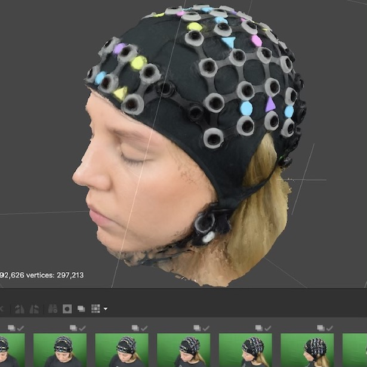
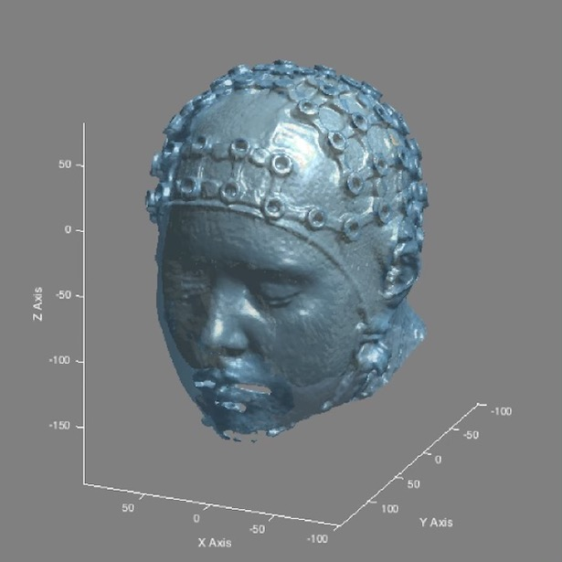
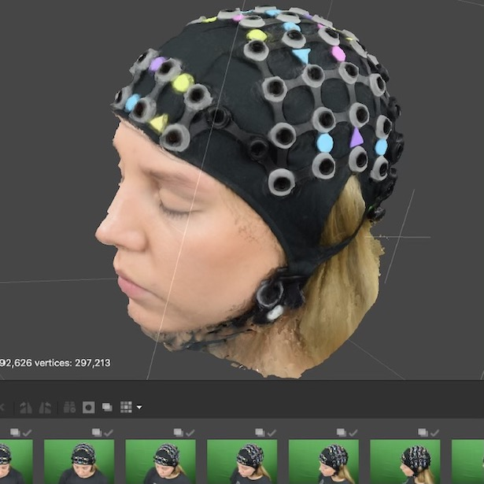
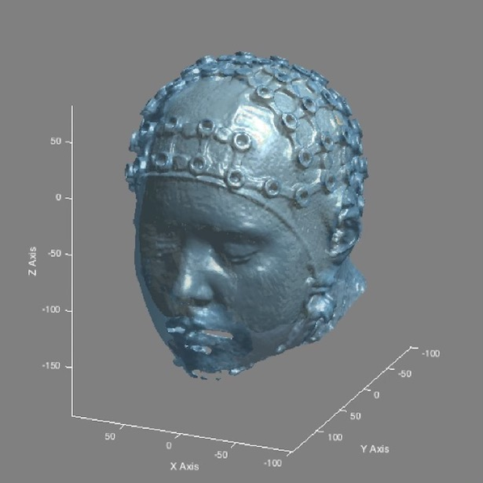

Projects
Labs I am currently working in:
Developing Brain Lab
- Principal Investigator: Dr. Emma Duerden
- Our research uses behavioural assessments & advanced brain imaging techniques to study cognitive development in infants and children
Culham Lab
- Principal Investigator: Dr. Jody Culham
- A major theme of the lab is Immersive Neuroscience: bringing cognitive neuroscience research closer to the real world. Our lab has developed unique techniques for bringing the “real world” into the constrained environment of the fMRI scanner and is moving in new directions with simulated reality and functional near-infrared spectroscopy.
Please find links to projects I have previously worked on below:

Photogrammetry for fNIRS
- Zenodo
- A user guide to using photogrammetry for localisation of optode locations in functional near-infrared (fNIRS) studies.
 
